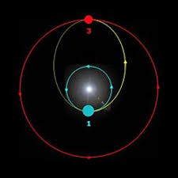

La dinamica orbital estudia el movimiento de los cuerpos celestes bajo la influencia de la gravedad. Sus fundamentos se encuentran en las leyes empiricas formuladas por Johannes Kepler en el siglo XVII y posteriormente explicadas por la mecanica newtoniana.
Los planetas se mueven en orbitas elipticas con el Sol situado en uno de los focos. Esta ley describe la geometria orbital y reemplaza el modelo circular aristotelico.
El radio vector que une el planeta con el Sol barre areas iguales en tiempos iguales. Esto implica que la velocidad orbital no es constante: el planeta se mueve mas rapido en el perihelio y mas lento en el afelio.
El cuadrado del periodo orbital es proporcional al cubo del semieje mayor de la orbita. En formulacion moderna:
T² ∝ a³
Isaac Newton demostro que estas leyes derivan de la ley de gravitacion universal. La interaccion gravitatoria entre dos masas produce trayectorias conicas: elipses, parabola o hiperbola, dependiendo de la energia del sistema.
La dinamica orbital permite calcular trayectorias de satelites artificiales, misiones interplanetarias y sistemas binarios estelares.
